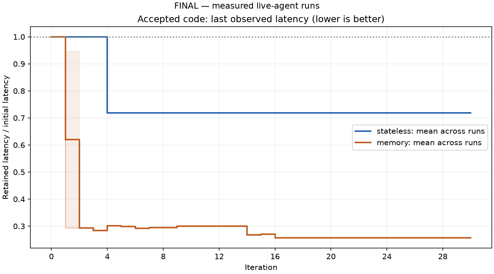
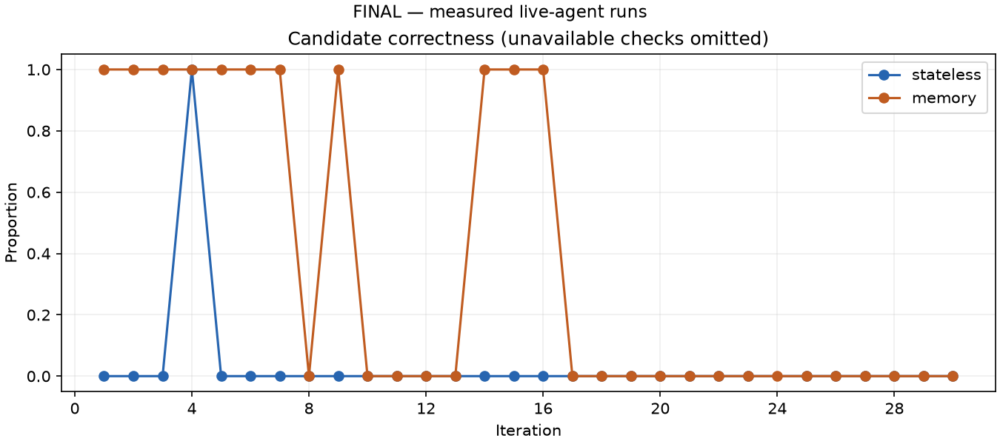
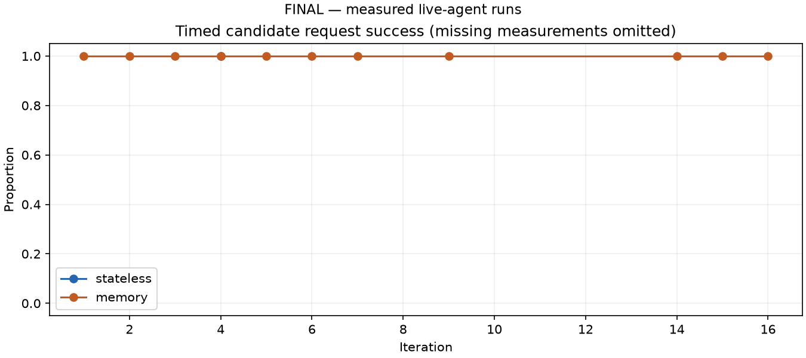

Incomplete study: one complete pair plus one memory run stopped after one attempt. Curves here include available partial data; memory has two runs only at iterations 0–1 and one thereafter. Use the complete-pair wrap-up for the primary descriptive comparison.
final-chat-measured-31baf0669711
Independent runs: 3. Mock and synthetic results are development evidence only.
Thin lines show individual runs; the band is the observed range across runs. Retained latency uses the latest measurement of accepted code; carried values are not new observations. Missing values are omitted.



Machine-readable summary · Attempts · Requests · Repetitions · Runs and usage